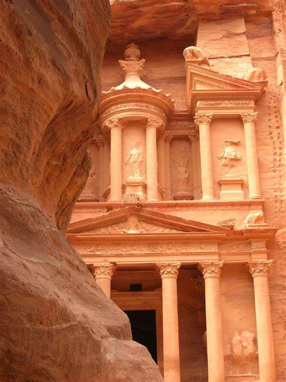

Petra is located about 150 miles south of both Jerusalem and Amman, the capital of Jordan, and about midway between Damascus, Syria, and the Red Sea, making it ideally suited as a hub of commerce in the area. The site is considered significant by historians and archeologists alike because of its beautiful rock-cut architecture and innovative water management system, the latter of which made the region inhabitable, given that it is surrounded by desert and rugged, mountainous terrain. Petra has also been referred to as the “Rose City” because of the color of the stones used in its buildings. It was named a UNESCO World Heritage Site in 1985.
